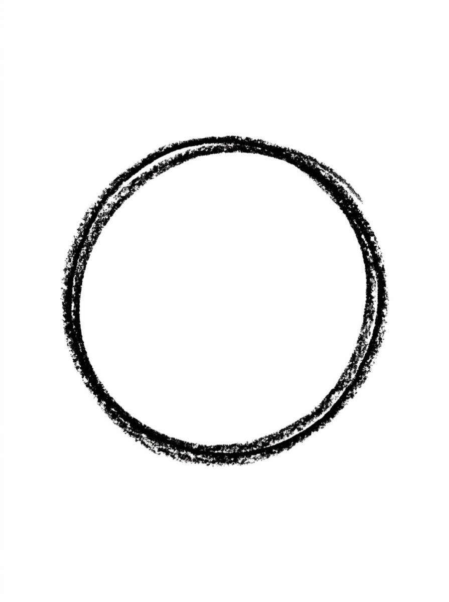
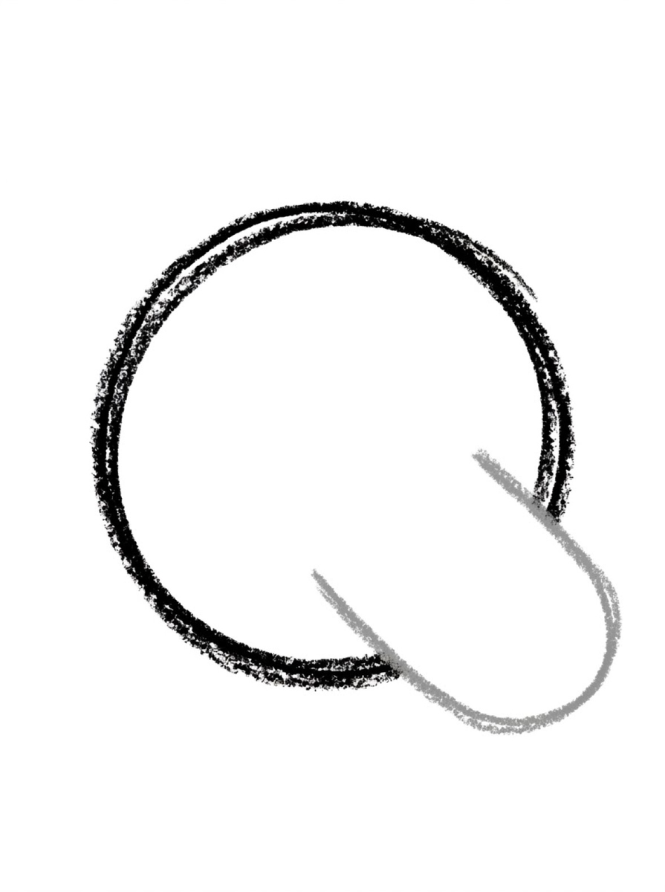
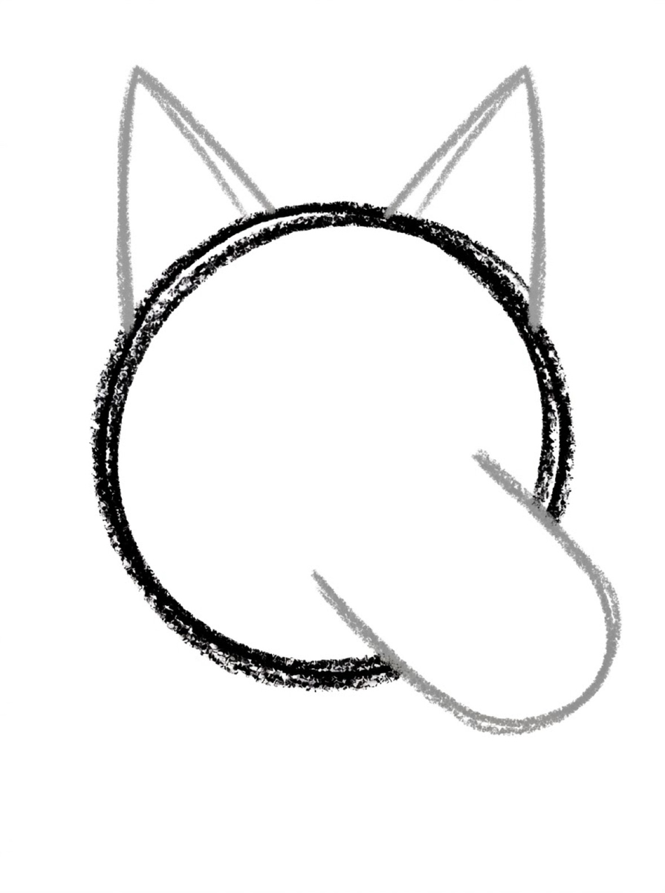
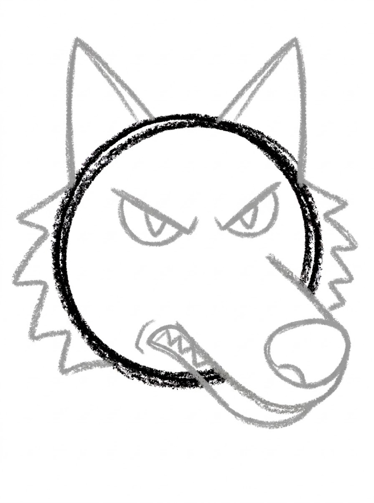
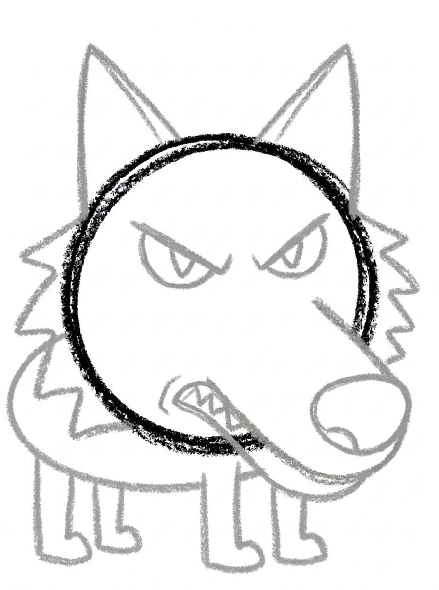
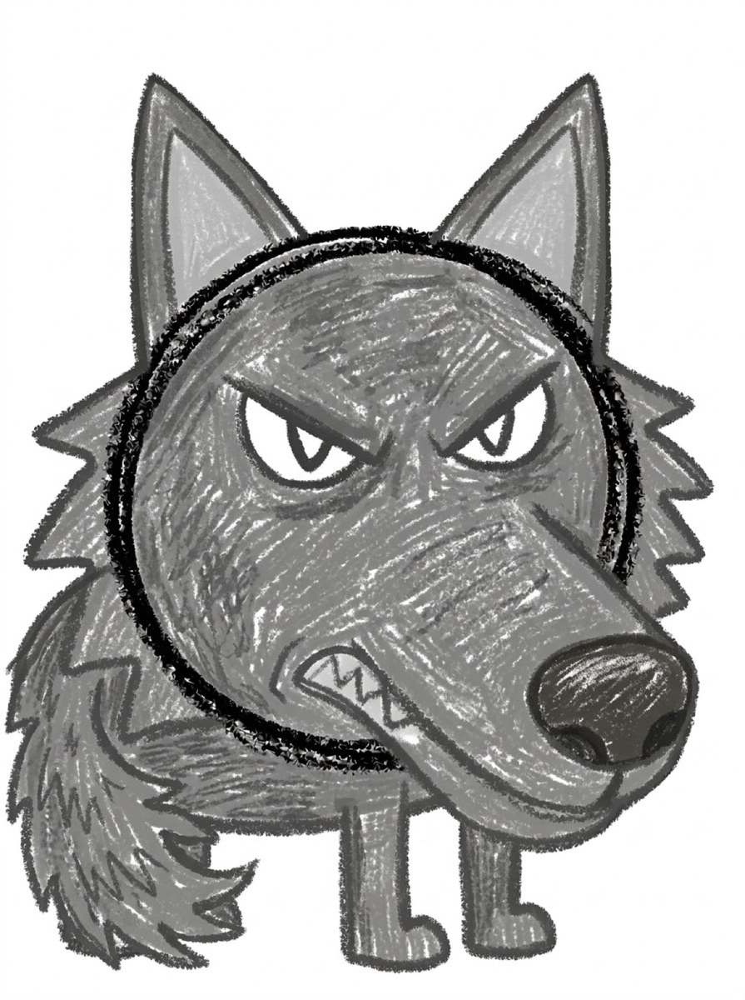

Wolf Drawing for Kids How to Draw a Wolf in 6 Easy Steps
Quick Answer
This free step-by-step tutorial shows kids how to draw a wolf in six easy steps: a circle head, a snout, triangle ears, a fierce face, a body, and a bushy tail. Download the printable PDF, grab crayons, and follow along together. Made for ages 5 and up — no signup needed, just print and draw. This is a wolf drawing easy enough for ages 5 and up — a simple drawing of wolf shapes (circle head, triangle ears, zigzag fur) with nothing fiddly.
At a Glance
- Subject: How to draw a wolf
- Ages: 5+
- Steps: 6 steps
- Time: ~15 min
- Difficulty: Easy-Medium
- Supplies: Paper, crayons
Wolves look wild, but they're just a dog drawing with attitude. Pointier ears, a longer snout, and some zigzag fur turn a friendly pup into a creature of the forest. Kids who can draw a dog already know 80% of this wolf.
✏️ How to Draw a Wolf: Step by Step
One step per box — draw each new part in a different color so kids can see exactly what changed.
Step 1: The Head

Draw a big circle for the wolf's head.
Step 2: The Snout

Draw a wide U shape sticking out from the lower half of the circle for the long snout.
Step 3: Triangle Ears

Draw two tall triangle ears on top of the head — pointier than a dog's.
Step 4: The Fierce Face

Add slanted eyes, a big nose at the snout tip, and a mouth line. Draw zigzag fur along the cheeks.
Step 5: The Body

Draw a long oval body below the head with four sturdy legs.
Step 6: Bushy Tail and Fur

Add a big bushy tail and zigzag fur tufts along the back. Color it gray!
📊 Wolf Drawing by Age
Every age can join in — just adjust the job.
| Age | What they can do | Tip |
|---|---|---|
| 3–4 | Trace the head circle and color it in | Skip the zigzag fur — smooth lines are fine at this age |
| 4–5 | Draw head, ears, and snout with help | Compare with the dog tutorial — spot what's pointier |
| 6+ | Draw the whole wolf solo | Challenge: draw the wolf howling at a circle moon |
🖨️ Download Your Free Wolf Drawing Printable
The printable lays out all 6 steps one per box, big enough for little hands — kids draw right alongside each step.
⬇️ Open Free Printable 🖨️ Print🎁 Free printable for ages 3+
🐺 Moonlight Howl Scene
A simple drawing of wolf looks epic against a big moon — draw the wolf small and let the night sky do the work. Draw your wolf small in the corner of a big night-sky page — dark blue background, a big yellow circle moon, tiny stars. The wolf suddenly looks epic instead of just 'an animal.' Backgrounds are the secret upgrade most kid drawings are missing.
🐺 Wolves in the Real World
Wolves live in family groups called packs, where parents, older brothers and sisters, and this year's pups all help raise the youngest. A wolf's howl is a pack roll-call: it can carry for kilometers through a forest, saying 'we are here' to family and 'keep away' to strangers. Each wolf's howl sounds different, and pack members recognize each other by voice.
A wolf is the wild ancestor of every dog, from the chihuahua to the Great Dane — look at the drawing and you can see the family resemblance underneath the zigzag fur. Wolves have an extraordinary sense of smell and hearing, built for tracking across huge territories. Ask your child where their wolf's pack is waiting: this one has the look of a scout about it.
What You'll Need to Draw a Wolf
Gray is the classic wolf color, but black or brown work too. You'll need a darker shade for the outlines and a lighter one for filling in. The zigzag fur tufts need a crayon with some precision — broken crayon tips actually work great for the jagged texture. White or light blue paper (like a night sky) makes a gray wolf stand out.
What They're Learning
The wolf's zigzag fur is the main event — it teaches that texture can be suggested with simple repeated marks, not detailed drawing. The pointed ears and snout (triangles) contrast with the round body shapes from easier tutorials, expanding their shape vocabulary. Getting the tail bushy without going off the page is good size-planning practice.
Make It Yours
Try a howling wolf with the head tilted up and sound lines coming out, or a wolf pup with rounder features and bigger eyes. A snowy background with pine trees turns it into a full scene. Kids can also try arctic white fur, or draw a whole pack — one big wolf and two small ones following behind.
🛒 Our Favorite Drawing Supplies
These are the supplies we reach for in our own home — washable (because kids), quality paper, and enough colors to avoid fights.
As an Amazon Associate, MomYouNeedThis earns from qualifying purchases — at no extra cost to you.
📖 Give Your Wolf a Story
A wolf drawing easy to finish deserves a story to live in. Wolves are pack animals, so a lone wolf drawing is a story missing its cast. Who is this wolf — the pack's leader, a young scout on its first solo run, or the one who starts the evening howl? Have your child dictate a sentence or two for under the drawing. Wolf stories sound best read aloud in a whisper, for the record.
The dog tutorial is the wolf's tame descendant, and drawing it next stages evolution on one fridge door: same family, four thousand generations apart. Kids who compare the two — pointier ears, wilder fur, fiercer eyes — are doing real observation, the artist's kind of science. The wild stories continue with the biggest cat in how to draw a tiger, or the forest hunter in how to draw a fox.
❓ Wolf Drawing FAQs
What is the easiest way for a kid to draw a wolf?
Draw a circle head with a wide U-shaped snout and two tall triangle ears. Add slanted eyes and zigzag cheek fur for the wild look, then a long oval body, legs, and a big bushy tail. It's a dog drawing with everything pointier.
What age can kids start learning to draw a wolf?
Most kids are ready around age 5, especially if they've tried the dog tutorial first — the shapes transfer directly. Younger kids can trace the head and color it in.
What supplies do we need to draw a wolf?
Paper and crayons or markers — grays plus a yellow for the moon if you draw the night scene. The free printable PDF lays out all six steps one per box so kids can draw right alongside each step.
Is the wolf drawing printable really free?
Yes — every printable on MomYouNeedThis is 100% free to download and print. No signup, no payment, just tap the download button.
Is this wolf drawing easy enough for beginners?
Yes — this wolf drawing easy tutorial builds the wolf in six steps from bold shapes kids already know: a circle head, triangle ears, and zigzag fur. It is made for ages 5 and up, and the free printable PDF lays out every step.
What is the easiest wolf drawing for kids?
The one on this page, because it starts from the friendly dog shapes most kids already know and makes them pointier — tall ears, slanted eyes, zigzag cheek fur. If your child has drawn the dog tutorial, the wolf is a small, satisfying step up in fierceness.
How do I print the wolf drawing tutorial?
Open the PDF and print at 100% scale (not 'fit to page') so the drawing boxes stay big enough for little hands. The printable is designed to stay large — never shrunk to force a fit.
How do you make a simple drawing of wolf?
Keep the shapes bold and skip the fiddly detail: a sturdy body, a round head with a blocky snout, tall ears, and a tail with real presence. Three things sell the wolf — slanted eyes, pointy ears, and zigzag fur along the cheeks. Everything else can stay simple.
How does a step by step wolf drawing tutorial work?
Each of the six pictures shows the wolf so far, with the newest part drawn in a fresh color. Your child copies just the colored part, compares it, and moves on — so the drawing builds up in layers instead of arriving all at once.
How do kids make cute wolf drawings easy to draw?
Use the same six steps, but soften the fierce parts: make the head rounder, the eyes bigger and rounder instead of slanted, and the ears a little shorter. That pup version is how this tutorial makes cute wolf drawings easy for younger kids.
📚 Keep Exploring
- ✏️ All 76 Drawing Tutorials 76 free step-by-step drawing tutorials for kids.
- 🐾 Animal Coloring Free printable animal coloring pages for little learners.
- ✏️ Drawing Practice Free printable drawing pre-writing worksheet for toddlers.